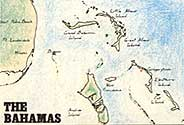
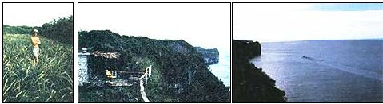
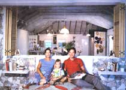
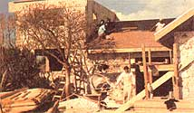
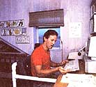
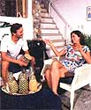
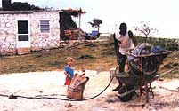
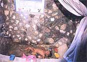
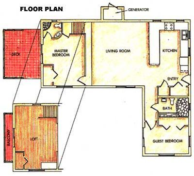
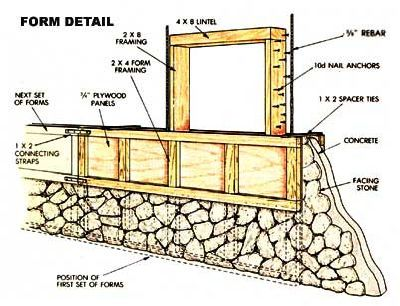

Out-Island And Builder
March/April 1987
Tackling the task of building my own home on the island of Eleuthera brought me face to face with any number of unexpected challenges...and rewards.
By Jonathan B. Gans
Photographed by Walter Chapell
[FLOOR PLAN] [FORM DETAIL]
In July of 1978 I arrived on the Bahamas "out island" of Eleuthera for a week's vacation. For six days I played, and on the seventh I bought land-so hard had I fallen for this gorgeous place with its friendly people. A native said he had a one-acre lot to sell and led me down a road to a point where we faced a wall of "bush": dense, semitropical, wild, green growth. He laid his machete to it and cut a path another 200 feet to the edge of a very high cliff:
It was the sort of spot where you could easily imagine no man had ever stood before. Straight down below me lay the Caribbean Sea, clear as tub water straight to the bottom. There wasn't another house in sight all up and down the cliffs to the east and west. "Now under here," he was telling me, "there's a cave that reaches back under the cliff: I always thought if I built a house here, I'd blast the rock out to where I could see water down there, and I'd have a living room with a glass floor."
Thus began an adventure in home building that has changed my life and probably prepared me to handle any building problem, delay, or frustration known to man-as well as a few known only to God and the Bahamas.
Stranger in Paradise
I returned in June of 1979 prepared to stay the summer, as I'd left my job and wouldn't be starting a new one until the fall. I walked down the same road and stood once again before a wall of bush, now fully grown back over the path. Everything else was exactly as I'd remembered it.
First thing: how to clear the site. The only bulldozers and grading equipment on Eleuthera were those owned and operated by the government to build and maintain the single road that ran the entire 110-mile length of the island. Like the rest of the island, my property was composed of solid limestone and flint lying under a thin but rich layer of topsoil-from which sprung the thick, constantly renewing vegetation. Clearing this bush was no job for a city boy.
"You need to find a Haitian fellah," Fat Pig told me. Fat Pig was a gentleman who lived in the town down the road from my homesite. He was neither fat nor porcine, but this was the name by which everyone in town addressed him. His response was always immediate recognition, without a trace of wryness, humor, or indignation.
I found a Haitian fellah, but he spoke very, very little English. I took him up to the property and offered him my machete, newly purchased at the General Supplies Store some 25 miles south in Governor's Harbor. The Haitian ran his iron-skinned thumb along the edge of the blade, waved his hand in refusal, turned, and walked away.
The next day, at what I considered the first light of dawn, I walked from my rented house in town to the property to begin, in the cool of the day, the job of clearing the bush myself. I found the Haitian crouched at the edge of the lot with a neat swath already cut down 180° before him. His long, curved, cutlass-style machete moved steadily in his right hand, while large clumps of grass and brush flashed briefly in his left before landing in heaps. He acknowledged my presence with a slight lift of his head-nothing more. I noticed his blade was shiny silver, and it looked sharp as a Wilkinson. When I lifted my own to inspect it more closely, I discovered new machetes were sold with a blunt edge, and mine was still square as a bastard file. In fact, I didn't even own a bastard file with which to sharpen it. In two days, working alone, he cleared the entire acre of all but the few mature trees I wanted to keep, and he heaped the brush-which had been helpless before that blade-into neat piles, while singing in Creole to no one in particular the whole time.
Commission Mission
A savvy Bahamian lady in town, connected by marriage to a prominent family whose name was on almost every business (including liquor, dry goods, grocery, gas, real estate, and insurance), befriended me-as I am sure she did most foreigners. She advised me that a set of building plans would help speed approval of my dream house by the island's Planning and Zoning Commission. The commission was a recently established institution whose principal function was to make certain "nothing get built which no hurricane going to blow down." The other unstated function, she didn't mind telling me, was to determine which contractor among the commission members would prefer to build the home. Construction work by foreigners was not the usual rule.
I wasn't a builder at the time, but I had stage-managed a good many off=Broadway plays in New York City, where I was living. I placed a call to a set designer friend in the city through the town operator down at the switchboard ("hours of business nine until nine") and asked him to draw up a set of hurry-up floor plans and elevations from my verbal description. Then I sent a sketch "air mail" (carried by a returning tourist). When my city friend had drawn the plans, my Bahamian friend would detail the mandatory steel reinforcing and the hurricane clips and steel-reinforced belt course around the top of what would be 10"-thick rock and concrete walls. I abandoned the see-through living room floor early on, but it would make a brief, if chimerical, appearance later.
The plans arrived in 10 days, with a bill for total "architect's fees" of $200. Praise be to the theater network! I submitted them (in triplicate) and commenced construction of the first building of my life-an outbuilding-pending approval of the plans for the "main house." This first structure was to be a small stone cottage on which I'd learn and practice construction methods-I called it my "mistake house." I'd also live there while working on the main house. The commission returned the plans after five weeks' study, covered with many colorful stamps of approval and marked with cigar ash. I asked the messenger, who happened to be the son of one of the commission members, what had transpired in that smoke-filled room. "Well sir," he said, "I believe it require some time to figure out first what it was you were trying to build. Then, once they could see what it was, I believe they said if you want to mix all that cement and lift all that stone for those walls, you could go right ahead and do just that. Most people here won't build with anything but cement block, and no one around want this kind of job." That was how I became a builder.
Once the land was cleared, I needed power and water at the site. I enlisted Charles Pierre, the reliable Haitian and my new friend, to dig a trench for water pipe from the main road some 400 yards away. Charles borrowed a pickaxe-he called it a "grabhold" but made it sound like "grubhoe"--and set to work through the hard ground and rock up the road. He finished in 2'/2 days, in 95°F heat, working alone . . . singing. A 6"-deep slit trench lay there just straight and true as a line snapped along the earth. The Commissioner of Waterworks in Governor's Harbor then took two weeks to approve my permit application to tie into the main island road's 6" waterline. In the meantime, a fellow named Screed from town delivered two 50-gallon drums of water daily in his pickup truck. When the crew finally made it out to connect the saddle, tee, and shutoff valve for my pipe, they left without installing a water meter, since none was in stock. And, in spite of the commissioner's awareness of this omission, I have enjoyed unmetered water ever since.
Getting water to the site was easy compared to getting electricity. You can't get what there isn't any of, and there simply was no electricity nearby. The town had only been electrified in 1965, and the power lines hadn't made it out my way. The winds were steady but not strong enough to power a windplant. Solar technology was still too expensive, and I had no stream for hydropower. Then I met a pilot who flew frequently to mainland Florida. We settled on a special charter flight: He removed the seats in his plane and replaced them with a cement mixer, generator, wheelbarrow, and other tools needed to start serious construction-including my very own grabhold!
Hurry Up...and Wait
Progress is ill defined on this island. A good practical definition might be, "As much as all unexpected natural and human conditions and events allow you to get done. That which bears no relation to your expectations or plans." While it seemed a great deal was going on during the first half of the summer, the signs of progress were slim: a cleared lot, a quarter-mile water pipe with a faucet sticking up out of the ground, a footing dug for the "mistake house," and a crew of mason, carpenter, and helper picked out from town.
The day the plane arrived with all the construction gear, the island ran out of gasoline. None was expected for 10 days, when the boat was to arrive. So I settled the duty bill of some 3507o value-added tax with the customs agency and prepared to get along without electricity that much longer. My framing and form-building lumber was also on a boat-one that had been due weeks before from the mainland. I wondered if the wood was on the same boat as the gasoline, but was informed this was a foolish speculation. Lumber and gasoline, "for safety reasons," would not be on the same boat. Two boats, for sure.
Inexplicably full of optimism, I arranged the next week for delivery of several loads of rain-washed sea sand and a few more of a substance called "quarry." This mixture of limestone rubble, rock, and sand, which comes out of the ground naturally premixed, was an ingredient in all the concrete prepared on site. Sensing the imminent arrival of construction materials, I finally asked Screed, the truck driver, if he could also bring me a pallet of 100-pound bags of cement (42 bags, $8 each). "No problem," he said. "Just as soon as they reach. Supposed to be on the next boat."
The lumber landed first, so I started assembling the forms for the rock and concrete with hand power. The house would be built with wooden forms of varying length, 24" high, placed parallel and 10" apart. After getting them plumb and level, and positioning reinforcing steel and wooden door and window frames, we'd place smooth facing stone flat against the inside of the front form and pour concrete in back of the stone to make the bulk of the wall. For the next layer, we'd place a new set of forms atop the first round.
Under normal, even remote, circumstances in the United States, this would have been a very efficient, practical, and rapid method of house building. In Eleuthera, however, I wasn't getting too far too fast. I kept reassuring myself that the experience, and not the schedule, was important. At some point, time had to come back to my side.
During that very hot summer, the cement mixer arrived with no instructions for assembly; the generator came without a muffler, which made communication impossible whenever it was running; the town pump ran out of gasoline seven times (but I wisely purchased a can and habitually hoarded 2 1/2 gallons); it rained so much the main waterline pump house at the foot of the hill just north of town flooded four times and the pumps short-circuited, thus cutting off water for two to four days at a time; the warehouse 25 miles away in Governor's Harbor ran out of cement almost as many times as I made trips to buy it (no telephone at the warehouse); and when cement was in supply, progress was limited by the diminishing capacity of Screed's wearing-out pickup truck to deliver barely half a pallet to the construction site.
When I was temporarily out of something -be it sand, cement, water, or power-there remained only one job that could keep alive that familiar, civilized feeling of progress: gathering stones. I pried, pulled, and piled up enough stones from my property, the road, the bush, the marshes, and the surrounding banana and pineapple fields to build the mistake house and the main house.
The Chimerical Floor
Since there are no sewers on Eleuthera, it's the owner's responsibility to dig his own cesspit and cover it with a slab of concrete. I had to find a way to carve one out of the solid rock of my bluff: Dynamite was recommended. I received instructions on obtaining the highly illegal stuff and arranged clandestine meetings with a gentleman easily mistaken for a pirate. We exchanged a few dollars for dynamite sticks, caps, and wire. And whenever I was ready, he said, he'd lend me his car battery for detonation. I'd never handled dynamite before, and the thought of all that explosive power beneath the shirts in my dresser drawer kept me awake a few nights.
Charlie was identified as the best man to drill the holes for the charges. They were to be 3' deep, drilled through solid rock with a 7' -long, very heavy iron spike. (No air compressors here.) It looked like Goliath's javelin.
Charlie's technique was humbling to watch. He dribbled a little water on the spot where he wanted to start the hole, and then added a few more drops as it deepened slowly into the rock. My Haitian friend stood above that small hole all day long, day after day,
raising that iron spike and letting it fall straight down through his hands-a human pile driver. I ached for him but knew it was the only way to get the job done. I had to remind myself often that Charlie was earning more each day than he could have earned in a week in his impoverished native land.
A Bahamian named Ghost Willie, from another village, heard of this endeavor and rolled up one day in a whirl of dust and a beat-up 60s station wagon, air hissing out of a leak in one tire. Willie was quite drunk on rum and full of excited offers to "blow the pit" for me. He had a car battery, all right, and suggested we tie my 10 sticks to one blasting wire and set it off all at once. I quickly painted a mental picture of a cesspit as wide as the open sea and a glass-floored living room, after all, created in one step. Fish could swim straight through the kitchen. Of course, there would be no cliff, so my view of the sea would be at eye level. I steered the weaving and brave Ghost Willie back to his car, fixed his flat, and sent him back up the road with many thanks. That night I hid the dynamite out in the bush.
Acceptance
On my early morning walks from the rented house in town out to the building site, I received much encouragement from townspeople along the route and from farmers starting out on foot to their fields far from their homes. It seemed there was new respect for the young white fellah who was building a different kind of house all out of native stone and who had stayed here all summer to do it.
The walls of the mistake house did rise quickly . . . once everything was at hand. As the forms climbed higher, I sought more help-both human and divine-to keep on lifting and placing the facing stones, buckets of concrete, and filler rock. Charlie and I broke out "Eleuthera champagne" (Beck's beer) when we'd smoothed off the reinforced "belt course" at the top of the walls around the perimeter of the small house. No more cement mixing! Two days later, the generator overheated and threw its piston right out of the cast-iron engine block, forcing my return to hand power to build the roof. I finally understood why these were called the out islands: We were always out of something. As we shared our "champagne" and toasted our real progress, I hoped I would never be out of Charlie.
My last week on Eleuthera was almost unbearably hot. The earth, the air, the breeze, and the seawater were all too warm to offer any relief from the heat that rolled sweat off of you while you simply stood still. The daily, cooling afternoon rains had inexplicably stopped, and moisture built up steadily in the air. Nobody, was working outside, but I still had to install the door and two windows, and shingle the roof of the mistake house.
Over beers one night at the Old Man's Bar in town, the talk turned naturally to the heat wave. Some Bahamian friends-Mr. Cool, Boy Lee, The Professor, and Fox-all cautioned me not to shingle that roof-small as it was-until the tongue-and-groove sheathing was "wetted" by a good rain. Otherwise, bad luck. I agreed the V joints would probably swell and tighten to a sound fit with a little moisture. But time was running out on me, and I doubted roofing contractors on the mainland hoped for rain before shingling. Charlie agreed it would be better to wait, but he also offered a ritual Haitian inducement to rain: "Slit the throat of a young rooster at the peak of the roof. Rain come before the next new moon."
I gave Charlie's advice deep consideration. Arising early the next morning, I affixed a nozzle to the garden hose, aimed it high over the roof, and got the boards good and wet. Shingles went on the next day.
And Then...
Every year for the next four years, I returned to Eleuthera during the sensibly cool month of January to work on the main house. I'd spend four weeks of refreshingly calm isolation living in the cool little mistake house, which served as equipment storeroom in my absence. With a crew of seldom more than two or three, we dug the footing trenches by hand; mixed all the concrete for the walls; placed all the stones; sawed, bent, and placed the reinforcing steel; and made the 4 X 8 window and door frames by hand (using lap joints, dowels, and glue).
It wasn't until January 1985 that money, time, and manpower permitted us to roof the 2,000-square-foot main house, including its second-story loft and guest bedroom. Six days a week for four weeks, six of us put up the partial second story, built in the floor joists for the decks and balconies, and raised and shingled the roof. This time the rain came all on its own.
During this seven-year adventure, I don't know if I've learned much from particular mistakes, or just learned to adapt to a whole new set of scaled-down expectations enforced by nature, the calm and peaceful Bahamians, and this peculiar island latitude. But I do know that I am decidedly different than I was when I started. I listen, think, and mentally complete a project now before I pick up the first tool.
For the first six months of 1986, my wife, our 18-month-old son, and I went down to Eleuthera and, with a crew of now close Bahamian friends, finished the interior of the main house. We installed four sliding glass doors and 18 windows, built 30 ' of birch kitchen cabinets, and continued the cool and native feel inside with much hand-placed stone, white plaster walls, and whitewash on louvered doors, open-beamed ceilings, and 8" tongue-and-groove pine paneling.
Over the years, two more small gasoline generators succumbed to exhaustion, and we finally built a generator house on the garden side for a four-kilowatt LPG twin-cylinder beauty with a heavy-duty muffler and remote electric start. The on/off button is next to my nightstand. Then in March 1986, the utility poles finally marched to within a quarter mile of us, and we ran the 220-volt lines ourselves, pulling the wires through the 1 1/2" PVC pipe all the way up the hillside to that "close" pole. I think it was the most tiring job of all. Perhaps it was also difficult, even when offered the wonderful convenience of "town power," to let go of that hard but still delicious remoteness so rare in this world.
Difficult, but not impossible. As soon as we were hooked up, we ordered the biggest refrigerator in the Sears catalog-complete with ice maker. These days we keep Eleuthera champagne cold and ready for the drop-in guest-a welcome feature of life without telephones. Every visitor from town now agrees that thick stone-and-concrete walls make for a nice, cool house on a hot day. The ocean breezes help too.
Of course, the main house wasn't completed without a few more mistakes-and controversial design features-but I have become experienced enough over the years to know how to cover them up or even highlight them. They're architectural touches now, and make visitors real envious.
Take the stone shower in the master bathroom. It took a while to find stones smooth enough to face the walls . . . and a while more to convince Dr. Black, the mason, that a stone shower was at all practical. Finally he relented: "You just bring the stones. I'll make it look good."
As he was pointing up the last few crevices in his very fine job-certainly the first stone shower he'd ever built-Charlie ambled to quietly, as is his way, and watched intently for some time. He seemed transfixed by the glistening chrome and black shower valve nestled quite professionally in the mortar and stone. I came up and proudly asked him how he liked it. Charlie had learned some English over the years, and he nodded slowly, indicating the valve handle. "That for satellite dish?" he asked.
Editor's Note: Jonathan and Luralyn Gans now rent their guest bedroom and the mistake house as a bed and breakfast. You can inquire about accommodations by writing to them at P.O. Box 5183, Gregorytown, Eleuthera, Bahamas.
|
The window-glass-clear waters of the Caribbean, darkening to a deep gem blue in the distance, seduced this tourist into buying land. Eleuthera's soil is thin, but rich enough to support Jonathan's back yard pineapple patch. |
 The keys: a Broadway set designer's plans and a fine Haitian fellah. |
 ""Most people here build with cement block, and no one around want this kind of job."" |
 The finished home is ample reward, but a lot of challenges were met before the story could be written. |
 Relxing in an owner-built home, where satisfaction fluffs the pillows. |
 ""Nothing get built which no huricane going to blow down."" |
|
 The rock showerr bath, yet another adventure in contracting. |
 The ""back yard,"" a nice place to sit and savor the view. |
 When water and Charlie were both on site, th epace of construction to a crawl. |
|
 The island's beauty is far from one-dimensional. It blooms on th eearth and under the sea. |
|
 |
|
|
 |
 |